GGPlot
GGPlot Stuff
data frame
#long data format table, has a row per variable/measurement
#columns code different IV for the study
a <- data.frame()
names <- c("peter", "paul", "mary")
age <- c(1000,1200,100)
sex <- c("M","M","F")
my_df <- data.frame(names,
age,
sex)
View(my_df)#makes a table ## Warning in View(my_df): unable to open display## Error in .External2(C_dataviewer, x, title): unable to start data viewermy_df$names #tells you column names ## [1] peter paul mary
## Levels: mary paul petermy_df$names <- as.character(my_df$names)#converst to charactor some more data frame/plot stuff
# Create dataframe
t <- c(1,2,3,2,3,4,5,4)
u <- c(4,3,4,3,2,1,2,3)
plot_df <- data.frame(t,u)
# basic scatterplot
ggplot(plot_df, aes(x=t,y=u))+ #identify what x/y axis are, groups, etc connect data to different prts of graph
geom_point() #adds a layer of dots...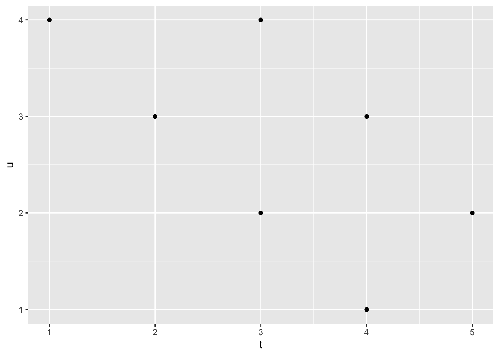 ##more descriptive plots
ggplot(plot_df, aes(x=t,y=u))+
geom_point(size=2)+ #change size of dots
geom_smooth(method=lm)+
coord_cartesian(xlim=c(0,7),ylim=c(0,7))+ #range/limits of axis
xlab("breaths")+
ylab("ounces of saliva")+
ggtitle("I made a scatterplot")+
theme_classic(base_size=12)+ #change background look of plot/font size, auto keeps font size i select when resized
theme(plot.title = element_text(hjust = 0.5)) #centers title by using .5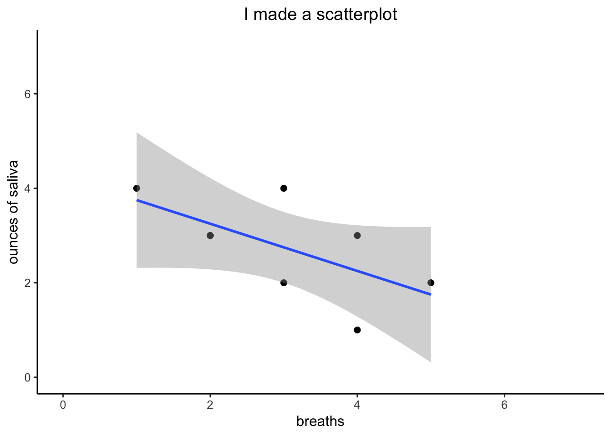
bar graph
#Create a dataframe
factor_one <- as.factor(c("A","B","C"))
dv_means <- c(20,30,40)
dv_SEs <- c(4,3.4,4)
plot_df <- data.frame(factor_one,
dv_means,
dv_SEs)
# basic bar graph
ggplot(plot_df, aes(x=factor_one,y=dv_means))+
geom_bar(stat="identity")#adds bars #identity means just plot numbers dont analyze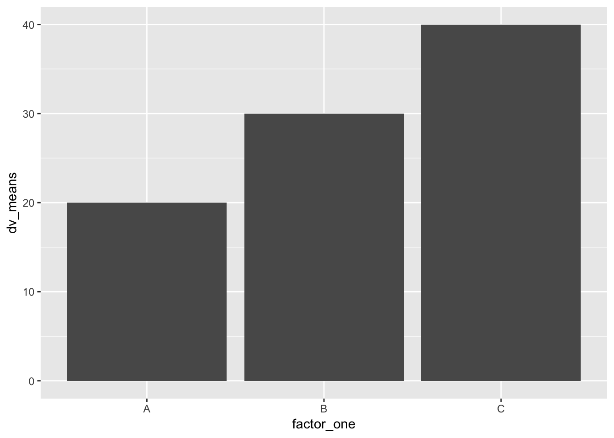
geom_point()#when after bar it shows up on top of bar## geom_point: na.rm = FALSE
## stat_identity: na.rm = FALSE
## position_identitybar graph with error bar
ggplot(plot_df, aes(x=factor_one,y=dv_means))+
geom_bar(stat="identity")+
geom_errorbar(aes(ymin=dv_means-dv_SEs,
ymax=dv_means+dv_SEs),
width=.2)+ #add error bar, width is how wide it is on the bar
coord_cartesian(ylim=c(0,50))+
xlab("x-axis label")+
ylab("y-axis label")+
ggtitle("I made a bar graph")+
theme_classic(base_size=12)+
theme(plot.title = element_text(hjust = 0.5))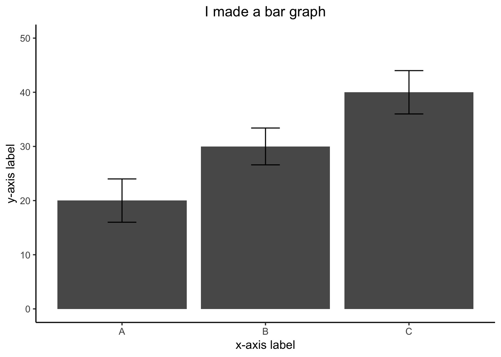
2 factor bar graph
#this is data with 2 level in each condition
factor_one <- rep(as.factor(c("A","B","C")),2)#by putting 2 at the end it repeats the factor
factor_two <- rep(as.factor(c("IIA","IIB")),3)#by putting 3 at the end it repeats the factor 3 times
dv_means <- c(20,30,40,20,40,40)
dv_SEs <- c(4,3.4,4,3,2,4)
plot_df <- data.frame(factor_one,
factor_two,
dv_means,
dv_SEs)
# basic bar graph
ggplot(plot_df, aes(x=factor_one,y=dv_means,
group=factor_two,
color=factor_two,
fill=factor_two))+#fills inside the bar
geom_bar(stat="identity",
position="dodge")#dodge means side by side bars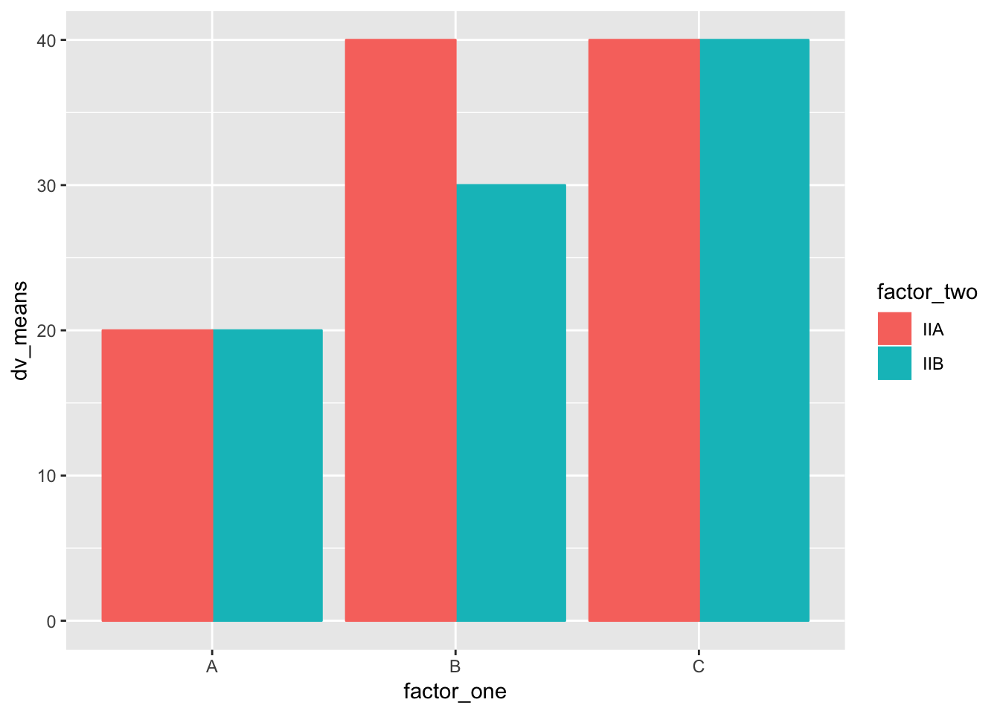
2 top to base ratio figure 5
#this is data with 2 level in each condition
top_base_ratio <- rep(as.factor(c("4:6","6:9","4:9")),2)#by putting 2 at the end it repeats the factor
base_top <- rep(as.factor(c("Wide Base","Wide Top")),3)#by putting 3 at the end it repeats the factor 3 times
dv_means <- c(15.2,15.5,16.5,16.3,17.6,16.6)
plot_df <- data.frame(top_base_ratio,
base_top,
dv_means)
# basic bar graph
ggplot(plot_df, aes(x=top_base_ratio,y=dv_means,
group=base_top,
color=base_top,
fill=base_top))+#fills inside the bar
coord_cartesian(ylim=c(14,18))+
geom_bar(stat="identity",
position="dodge")#dodge means side by side bars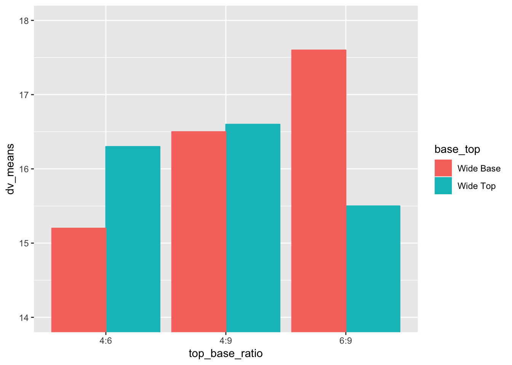
2 top to base ratio figure 5
#this is data with 2 level in each condition
fill_empty <- as.factor(rep(c("fill","empty"),each=2))#by putting 2 at the end it repeats the factor
my_estimate <- as.factor(rep(c("Wide Base","Wide Top"),2))#by putting 2 at the end it repeats the factor 2 times
dv_means <- c(19.5,17.7,18.5,17.8)
plot_df <- data.frame(fill_empty,
my_estimate,
dv_means)
# basic bar graph but im only gettign two bars istead of 2 groups of two
ggplot(plot_df, aes(x=fill_empty,y=dv_means,
group=my_estimate,
color=my_estimate,
fill=my_estimate))+ #fills inside the bar
coord_cartesian(ylim=c(17,20))+ #need plus sign to add each row to the plot
geom_bar(stat="identity", position="dodge") #dodge means side by side bars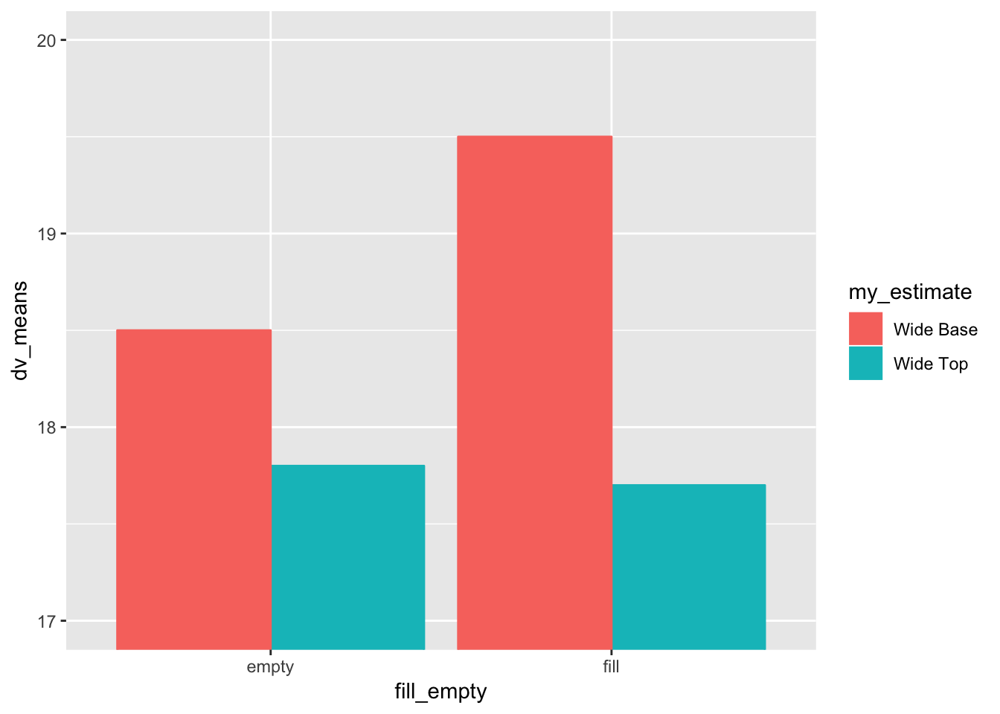
adding error bars, customizing 2x3 factor bar graph
ggplot(plot_df, aes(x=factor_one,y=dv_means,
group=factor_two,
color=factor_two,
fill=factor_two))+
geom_bar(stat="identity", position="dodge")+
geom_errorbar(aes(ymin=dv_means-dv_SEs,
ymax=dv_means+dv_SEs),
position=position_dodge(width=0.9), #centers error bars
width=.2,
color="black")+
coord_cartesian(ylim=c(0,50))+
xlab("x-axis label")+
ylab("y-axis label")+
ggtitle("Bar graph 2 factors")+
theme_classic(base_size=12)+
theme(plot.title = element_text(hjust = 0.5))## Error: Aesthetics must be either length 1 or the same as the data (4): x, group, colour, fill
bar graph faceted
factor_one <- rep(rep(as.factor(c("A","B","C")),2),2)
factor_two <- rep(rep(as.factor(c("IIA","IIB")),3),2)
factor_three <- rep(as.factor(c("IIIA","IIIB")),each=6)
dv_means <- c(20,30,40,20,40,40,
10,20,50,50,10,10)
dv_SEs <- c(4,3.4,4,3,2,4,
1,2,1,2,3,2)
plot_df <- data.frame(factor_one,
factor_two,
factor_three,
dv_means,
dv_SEs)
# basic bar graph
ggplot(plot_df, aes(x=factor_one,y=dv_means,
group=factor_two,
color=factor_two))+
geom_bar(stat="identity", position="dodge")+
facet_wrap(~factor_three)#creates two graphs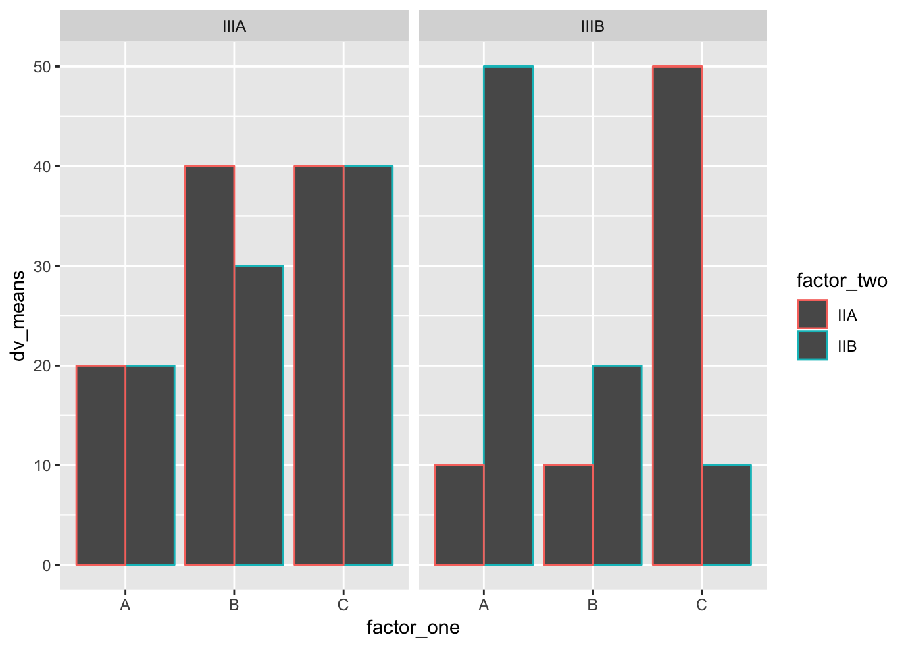
names <- rep(c("dara",
"rita",
"liza",
"azalea",
"barbi",
"rowena",
"fiona",
"katie"),each=2)#repeat whats in rep(c()each=2)twice
MnFreq <- rnorm(16, 45, 20)
condition <- rep(c("social","nonsocial"),8)
aversity <- rep(c("A","NonA"), times=c(8,8))
plot_df<- data.frame(names, MnFreq, condition, aversity)
ggplot(plot_df, aes(x=condition,
y=MnFreq,
group=names,
linetype=aversity))+
geom_line()+
geom_text(label=names)+
theme_classic()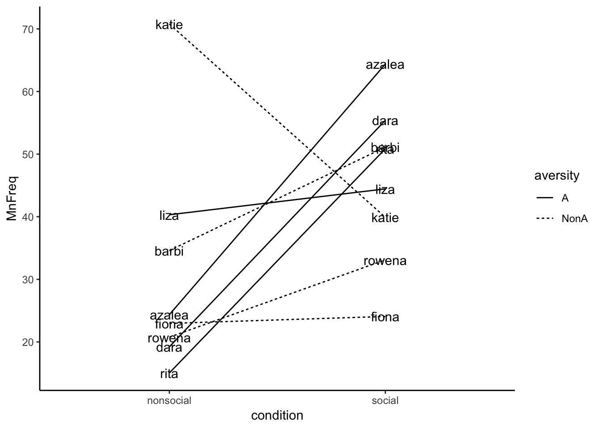 ###woman equal man more likely
ggplot(plot_df, aes(x=factor_one,y=dv_means))+
geom_bar(stat="identity")+
geom_errorbar(aes(ymin=dv_means-dv_SEs,
ymax=dv_means+dv_SEs),
width=.2)+ #add error bar, width is how wide it is on the bar
coord_cartesian(ylim=c(0,50))+
xlab("x-axis label")+
ylab("y-axis label")+
ggtitle("I made a bar graph")+
theme_classic(base_size=12)+
theme(plot.title = element_text(hjust = 0.5))## Error: Aesthetics must be either length 1 or the same as the data (16): x, y2 factor bar graph - i tried to adjust my bars within the bars, and now it wont work
#this is data with 2 level in each condition
factor_one <- rep(as.factor(c("doctor",
"Butcher",
"firefighter",
"construction")),3)#by putting 3 at the end it repeats the factor
levels(factor_one) <- levels(factor_one)[c(3,1,4,2)]#reorder items within the vector
factor_two <- as.factor(c("women","equal","man"))
dv_means <- c(10,30,40,40,90,60,58,50,0,10,2,10)# four sets of grouped means
plot_df <- data.frame(factor_one,
factor_two,
dv_means)
# basic bar graph
ggplot(plot_df, aes(x=factor_one,y=dv_means,
group=factor_two,
color=factor_two,
fill=factor_two))+#fills inside the bar
geom_bar(stat = "identity",position = "dodge")#dodge means side by side barsfigure three - men and women perform surgery
men_perform <- rep(as.factor(c("prior",
"model posterior",
"reported posterior")))
women_perform <- rep(as.factor(c("prior",
"model posterior",
"reported posterior")))
dv_means <- c(68,88,86,30,72,78)# four sets of grouped means
condition <- rep(c("men perf","women perf"))
plot_df <- data.frame(men_perform,
women_perform,
condition,
dv_means)
ggplot(plot_df, aes(x=condition, y=dv_means,
group=men_perform,
color=men_perform,
fill=men_perform))+
#fills inside the bar
geom_bar(stat="identity", position="dodge")#dodge means side by side bars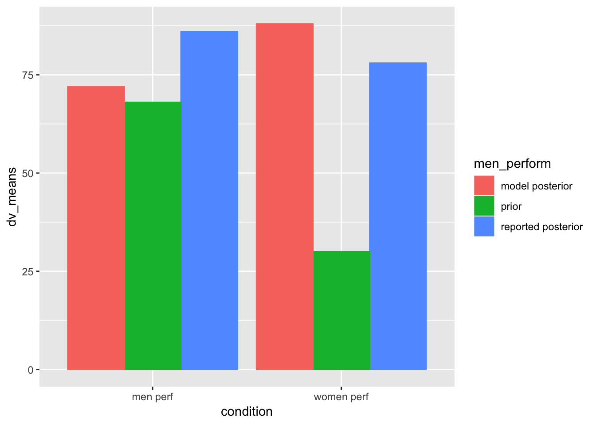
# Create dataframe
social <- c(-2.3,-2.2,-2.0,-1.9,-1.8,-1.7,-1.6,-1.2,-1.1,-1,-.89,-.79,-.68,-.59,-.56,-.54,.5,.75,.82,.93,1.2,1.3,1.4,1.5,1.9,2.2,2.4,2.5,2.7,2.9,3.0,3.1)
autism <- c(-8,-2,13,3,5,-2,-4,6,7,-6,-6,-5,7,-8,4,6,-1,-2,-3,-5,3,4,-7,-8,-4,-4,4,-3,-7,-6,4,-2)
plot_df <- data.frame(social,autism)
# basic scatterplot
ggplot(plot_df, aes(x=social,y=autism))+ #identify what x/y axis are, groups, etc connect data to different prts of graph
geom_point()#adds a layer of dots...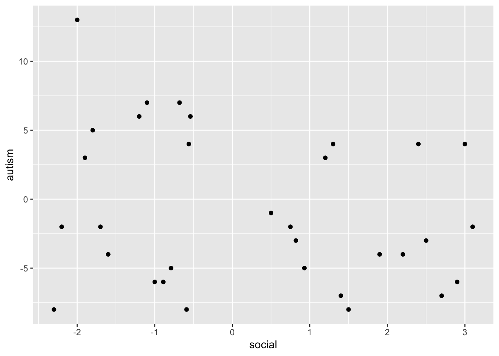
violin plot - “money transferred to peron”
# Create dataframe
person_x_answer <- c("equally likely","man more likely")
#hand entered all the data points, the general shapes replicate the ones from the homework
moneytransferred <- c(.02,.02,.02,.02,.02,.02,.02,NA,.02,NA,.02,NA,.02,NA,.02,.02,.02,NA,.03,.02,.03,NA,.03,.02,.03,.02,.04,.03,NA,.03,.04,.03,NA,.04,.05,.04,.06,.05,.06,.05,.08,.06,.08,.09,.07,NA,.10,NA,.11,.09,.11,.09,.11,.10,.12,.10,.12,.10,.13,.11,.13,.11,.13,.11,.13,.12,.13,.12,.13,.12,NA,.13,.14,.13,.14,.13,NA,.13,.14,NA,.14,NA,.14,NA,.14,.14,.15,NA,.15,NA,.15,.15,.15,.16,.15,.16,.15,.16,.16,.17,.16,.17,.16,.17,.17,.18,.17,.18,.17,.18,.19,.19,.19,.19,.19,.19,.19,.20,.19,.20,.19,.20,.20,.21,.20,.21,.20,.21,.20,.22,.20,.22,.20,.23,.22,NA,.22,NA,.23,.24,.25,.25,.26,.26,.27,NA,.27,NA,.28,.28,.28,NA,.28,NA,.29,.29,.30,NA,.30,NA)#need to represent dots to follow equal then men, equal then men, to have an even number
plot_df <- data.frame(person_x_answer,moneytransferred)
# basic scatterplot
ggplot(plot_df, aes(x=person_x_answer,y=moneytransferred))+
coord_cartesian(ylim=c(.00,.30))+#identify what x/y axis are, groups, etc connect data to different prts of graph
geom_violin()#adds violin as representation of dots## Warning: Removed 25 rows containing non-finite values (stat_ydensity).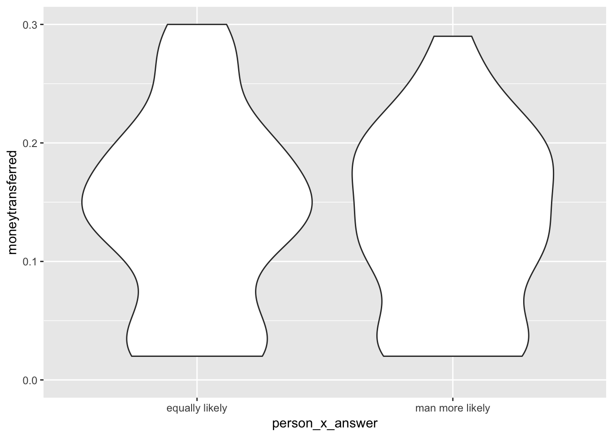
person_x_answer <- rep(c("equally likely","man more likely"),each=50)
#hand entered all the data points, the general shapes replicate the ones from the homework
moneytransferred <- c(rnorm(50,50,25),rnorm(50,60,10))#need to represent dots to follow equal then men, equal then men, to have an even number
plot_df <- data.frame(person_x_answer,moneytransferred)
# basic scatterplot
ggplot(plot_df, aes(x=person_x_answer,y=moneytransferred))+
coord_cartesian()+#identify what x/y axis are, groups, etc connect data to different prts of graph
geom_violin()#adds violin as representation of dots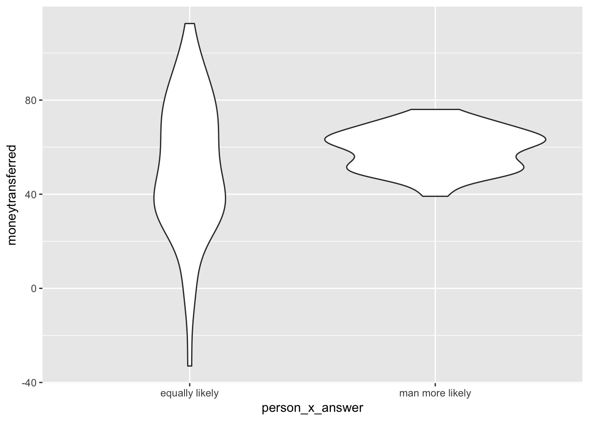
visual group
transornot <- rep(as.factor(c("non_transient",
"transient")),2)
insideout <- rep(as.factor(c("outside",
"inside")),2)
Mean_Median_RT <- c(303,301,291,278)# mean for each condition
plot_df <- data.frame(transornot,
insideout,
Mean_Median_RT)
ggplot(plot_df, aes(x=transornot, y=Mean_Median_RT,
group=insideout,
color=insideout,
fill=insideout))+
#fills inside the bar
geom_bar(stat="identity",
position="dodge")#dodge means side by side bars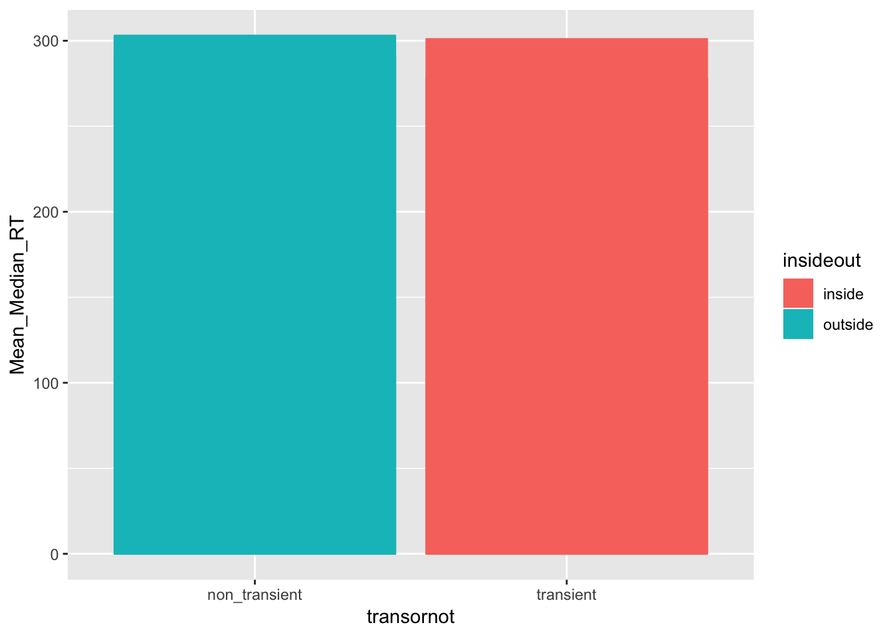
men and women perform sugery histogram
# Create data for the graph.
Men_performed <-c(-2,-2,-1,-1,-1,-.5,-1,-1,-1,-.5,-.5,0,0,0,0,0,0,0,0,0,0,0,0,0,0,0,05,.05,.05,.05,.05,.05,.05,.05,.05,.05,.75,.75,.75,.75,.75,.75,1,1,1,1,1,1.5,1.5,1.5,1.75,1.75,1.75,2,2,2,2,2.25,2.25,2.25,2.5,2.5,2.75,2.75)
# Create the histogram.
hist(Men_performed,xlab = "Log Likelihood Ratio",col = "green",border = "black", xlim = c(-2,4), ylim = c(0,40),
breaks = 5)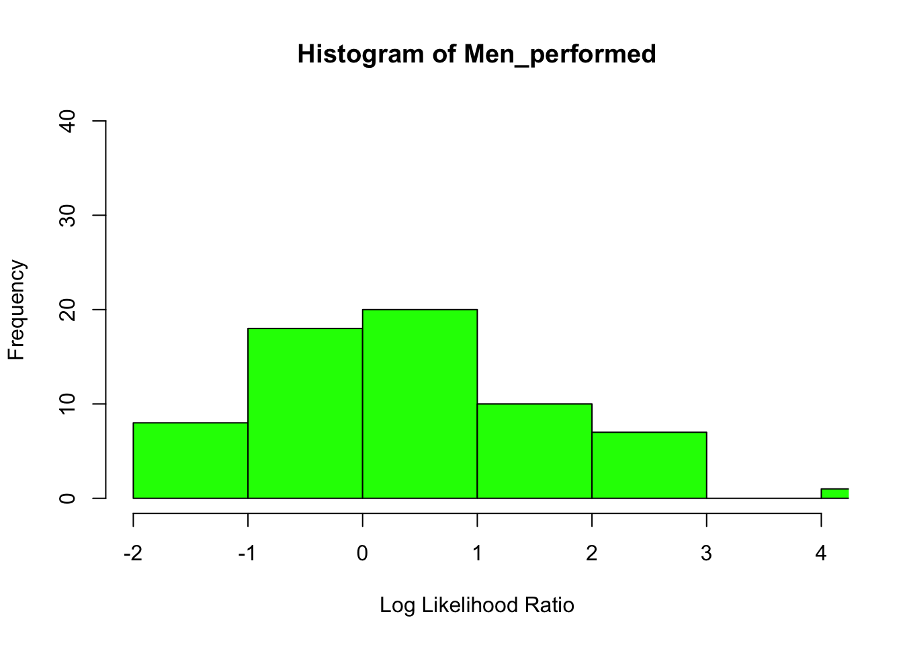